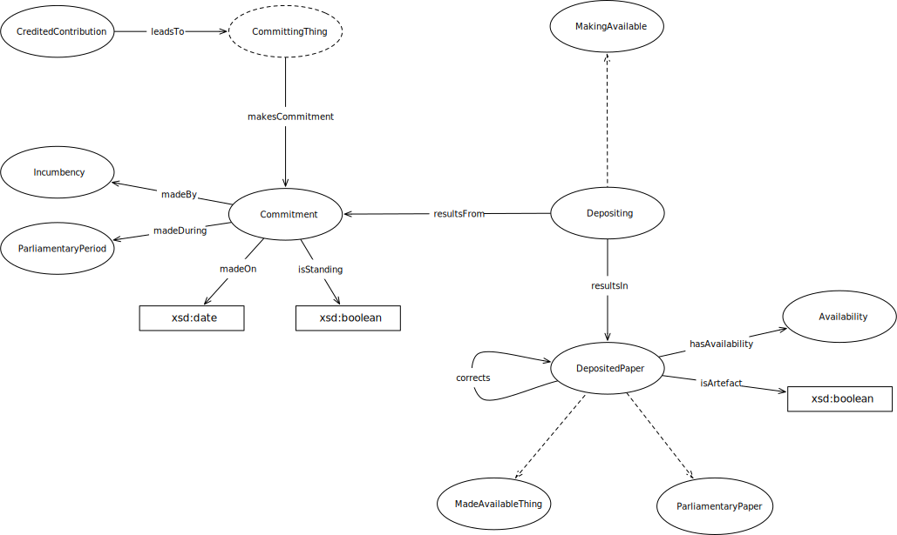

IRI: http://parliament.uk/ontologies/depositing/Availability
IRI: http://parliament.uk/ontologies/depositing/Commitment
IRI: http://parliament.uk/ontologies/depositing/CommittingThing
IRI: http://parliament.uk/ontologies/depositing/DepositedPaper
IRI: http://parliament.uk/ontologies/depositing/Depositing
IRI: http://parliament.uk/ontologies/depositing/Incumbency
IRI: http://parliament.uk/ontologies/depositing/MadeAvailableThing
IRI: http://parliament.uk/ontologies/depositing/MakingAvailable
IRI: http://parliament.uk/ontologies/depositing/ParliamentaryPeriod
IRI: http://parliament.uk/ontologies/depositing/corrects
IRI: http://parliament.uk/ontologies/depositing/hasAvailability
IRI: http://parliament.uk/ontologies/depositing/leadsTo
IRI: http://parliament.uk/ontologies/depositing/madeBy
IRI: http://parliament.uk/ontologies/depositing/madeDuring
IRI: http://parliament.uk/ontologies/depositing/makesCommitment
IRI: http://parliament.uk/ontologies/depositing/resultsFrom
IRI: http://parliament.uk/ontologies/depositing/resultsIn
IRI: http://parliament.uk/ontologies/depositing/isArtefact
IRI: http://parliament.uk/ontologies/depositing/isStanding
IRI: http://parliament.uk/ontologies/depositing/madeOn
This HTML document was obtained by processing the OWL ontology source code through LODE, Live OWL Documentation Environment, developed by Silvio Peroni.